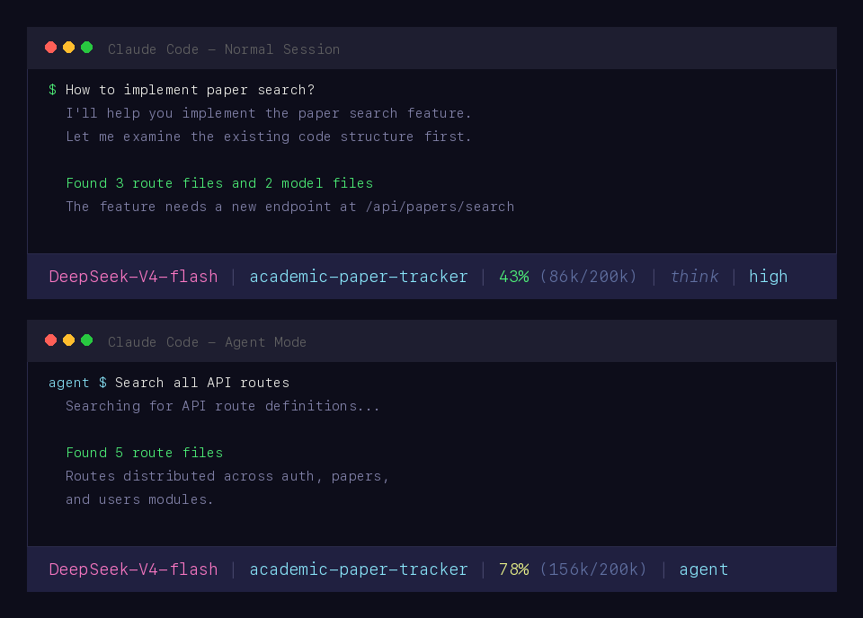

为 Claude Code 打造的情境感知状态栏——模型、目录、上下文、推理模式，一眼尽览。

每次 AI 回复后自动刷新，无需手动触发，零操作感知。
紧凑设计，不干扰主工作区，信息一目了然。
显示当前 AI 模型名，深度思考时自动出现 think 标识。
路径智能缩短（保留最后 2 级），~ 代替 Home 目录。
实时占用百分比 + 精确 token 用量，颜色预警一目了然。
内置 10 套配色主题，自由切换，适配不同终端审美。
每个字段独立开关，只显示你关心的信息。
记录会话已用时长，帮你判断是否需要清理上下文。
| 字段 | 含义 | 颜色 | 示例 |
|---|---|---|---|
| Model | 当前 AI 模型 | 品红加粗 | DeepSeek-V4-flash |
| Directory | 当前工作目录 | 蓝色 | src/components |
| Context | 占用百分比 + token | 绿/黄/红 | 43% (86k/200k) |
| think | 深度思考模式 | 灰色斜体 | think |
| Agent | Agent 子进程名称 | 黄色 | explore |
| effort | 专注模式级别 | 青色 | high |
| fast | 快速模式 | 青色 | fast |
| Duration | 会话已用时间 | 青色 | 12m30s |
内置 10 套主题，一键切换，适配不同终端审美。
安装 jq（JSON 解析器）
brew install jq
下载并运行安装脚本
bash -c "$(curl -fsSL https://raw.githubusercontent.com/tsingke/claude-code-statusline/main/scripts/install.sh)"
重启 Claude Code 即可看到状态栏
claude
statusline.sh → ~/.claude/statusline.shstatusline-config.sh → ~/.claude/（配置 CLI）settings.json安装后通过 ~/.claude/statusline-config.sh 进行配置，或设置别名简化操作。
推荐添加别名：alias statusline='~/.claude/statusline-config.sh'
Claude Code 内置的 statusLine 配置项允许指定一个 shell 脚本，该脚本在每次 AI 回复后自动执行，并通过 stdin 接收完整会话状态 JSON。脚本输出到 stdout 的内容将显示在终端底部。